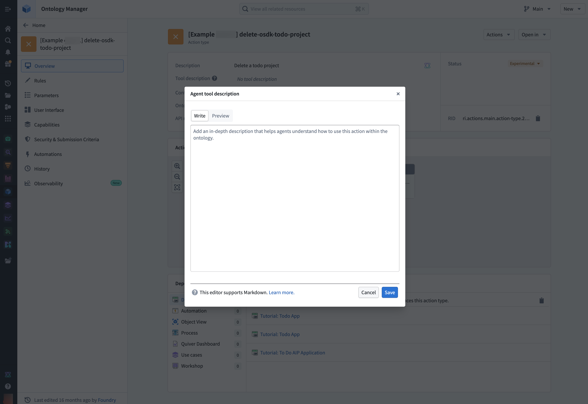
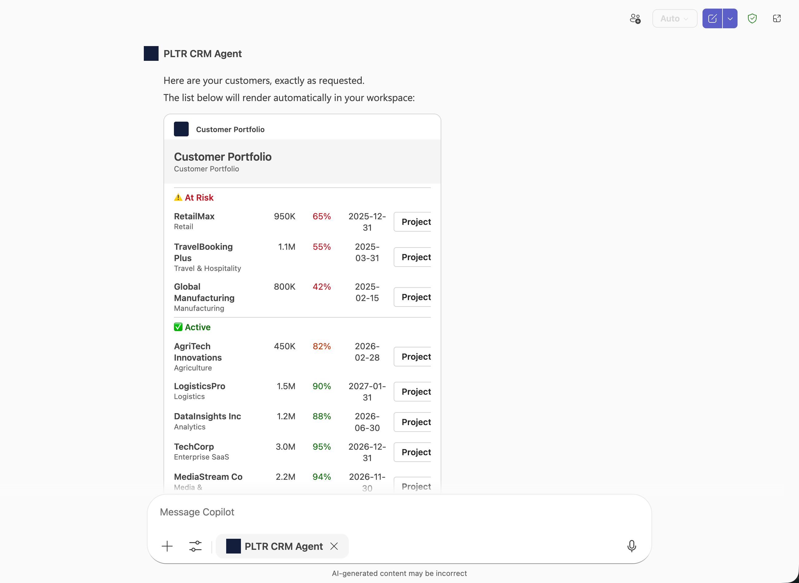
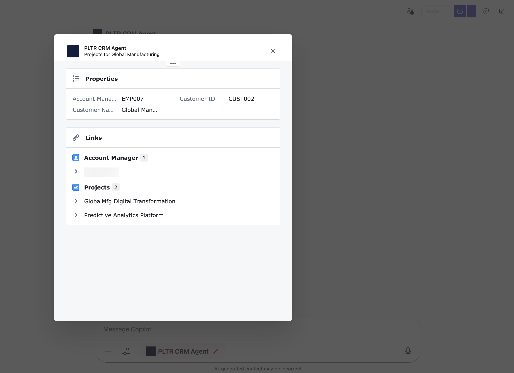
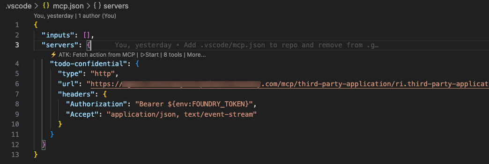
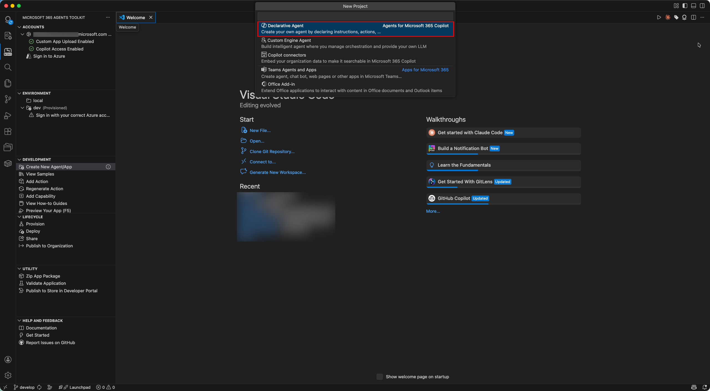

Use the Agent tool description field in the Ontology Manager application to update the description the agent sees when using the action as a tool. This allows you to provide specific guidance to AI agents about when and how to use each action. For example, an action that creates a new task and gets the project ID for linking the tasks could include instructions on how to obtain the project ID.

Claude skills â are reusable instruction sets that extend what Claude can do. You can integrate Ontology MCP (OMCP) tools with your skills to encode more complex business logic into your agent.
In the example below, a skill named get-or-create-task guides the agent on how to use both the search tool and the create task action tool in combination. This prevents duplicate tasks from being created by first searching for an existing task before creating a new one.
---
name: get-or-create-task
description: Searches for a task by title in a project, returns it if found, or creates a new task if not found
---
# Get or create task
Find an existing task by title within a project, or create a new task if no match is found.
## Instructions
1. Search for the task by title using the search tool:
- Tool: `search-osdk-todo-task`
- Filter results by `project_id` if provided
2. Evaluate results:
- If a match is found, return the existing task details
- If multiple matches are found, use the first match
- If no matches are found, proceed to create a new task
3. Create a new task using the create task action tool:
- Tool: `create-osdk-todo-task`
- Required parameters: `title`, `project_id`
- Optional parameters: `description`, `status`, `assigned_to`, `start_date`, `due_date`
4. Return the task details including ID, title, project, status, and assignee
Microsoft Copilot Studio integration only supports authorization code grant in a Confidential Client. This means that when creating the Developer Console application for your Ontology MCP integration with Microsoft Copilot Studio, you should choose Backend service and User's permissions. This will create the required service user that Copilot Studio uses to issue the token on behalf of your users.
Developed by Microsoft, Adaptive Cards â are a versatile UI framework for Teams, Copilot, and Outlook integrations. When paired with Ontology MCP tools, Adaptive Cards let your agent return structured data from your ontology and display it as a formatted card rather than plain text.

Additionally, you can use Action.OpenUrlDialog in your Adaptive Cards to trigger a URL that opens a custom dialog in Teams or Copilot, allowing users to interact with the data returned from your Ontology MCP tools.

Before you begin, install the following VS Code extensions:
Create a .vscode/mcp.json file in your project to connect VS Code to your Ontology MCP server:
{
"inputs": [],
"servers": {
"todo-confidential": {
"type": "http",
"url": "<your-ontology-mcp-server-url>",
"headers": {
"Authorization": "Bearer ${env:FOUNDRY_TOKEN}",
"Accept": "application/json, text/event-stream"
}
}
}
}
Replace <your-ontology-mcp-server-url> with your Ontology MCP server's URL, which you can find in your Developer Console application.


To render an Adaptive Card from the Ontology MCP tool output, add a capabilities block to your agent's tool definition. The static_template property points to an Adaptive Card template file that defines how the returned data is displayed.
The following example configures a GetCustomerList tool to render its response using an Adaptive Card:
{
"name": "GetCustomerList",
"description": "List all customers.\n\n Returns:\n A list of CustomerSummary objects with key customer properties.",
"parameters": {
"type": "object",
"properties": {},
"required": []
},
"capabilities": {
"response_semantics": {
"data_path": "$",
"static_template": {
"file": "adaptiveCards/customerList.json"
}
}
}
}
The data_path property specifies the JSON path to the data in the tool response, and static_template.file points to the Adaptive Card template that renders the data.
You can create a Claude skill that automatically generates Adaptive Card templates based on the schema of your Ontology MCP tools. First, follow the instructions on the Developer Console MCP page to connect your Ontology MCP server to Claude Code. Then, save the following skill file to your project's .claude/skills directory, such as the .claude/skills/build-adaptive-card.md example below:
---
name: build-adaptive-card
description: Build an Adaptive Card for a specific MCP tool connected to Claude Code
---
# Build Adaptive Card for MCP Tool
You are helping the user build an Adaptive Card for a specific MCP tool that is connected
to Claude Code in this session.
## Instructions
Follow these steps precisely:
### Step 1: Identify the target tool
Ask the user which MCP tool they want to build an Adaptive Card for. List the available
MCP tools you know about from the connected MCP server. If the user has already named the
tool, skip asking.
### Step 2: Call the tool to get a real response sample
Call the named MCP tool with minimal or sample arguments to get a real response. If the
tool requires arguments, use the most minimal and representative ones possible. Capture the
full JSON response.
If the tool requires arguments you cannot guess, ask the user for sample argument values
before calling.
### Step 3: Validate the response shape
Inspect each property of the returned object. If any property value is a string that is
itself valid JSON (starts with `[` or `{` and parses as JSON), the tool is double-serializing
its output. Stop and tell the user:
> The tool is returning its data as a JSON-encoded string instead of a native JSON
> object or array. Adaptive Card templates cannot bind to a string. Fix the MCP server
> tool implementation to return a native Python dict or list instead of `json.dumps(...)`.
Do not proceed until the user confirms the tool has been fixed.
If the response is valid JSON, determine:
- Is the top-level response an object with a `value` array? (MCP envelope pattern)
- Or is it a flat array or a single object?
- What are the field names, types, and which fields are nullable?
- Which fields are numeric and might benefit from formatting (currency, percentages)?
### Step 4: Generate the Adaptive Card JSON
Create an Adaptive Card (version 1.5) following these rules:
**Template binding:**
- If response is `{"value": [...]}`, use `"$data": "${value}"` on the repeating Container
- If response is a flat array, use `"$data": "${$root}"` on the repeating Container
- If response is a single object, bind fields directly with `${fieldName}`
**Card structure:**
- Start with a header Container (`style: "emphasis"`, `bleed: true`) with a title TextBlock
- For list responses: use a repeating Container with a ColumnSet inside
- For single-object responses: use a FactSet or labeled rows
- Use `"wrap": true` on all TextBlocks
- For nullable fields, add `"$when": "${field != null}"` guards
- For currency fields: use `formatNumber` for display formatting
- For status color coding: use conditional `if()` expressions
- Do NOT use `.length` on arrays (not supported in template language)
- Do NOT use date functions, structs, arrays, or window functions
**File naming:** `appPackage/adaptiveCards/<toolName>.json` (camelCase the tool name)
Write the card JSON to `appPackage/adaptiveCards/<toolName>.json`.
Next, write a companion `.data.json` file at `appPackage/adaptiveCards/<toolName>.data.json`
containing the actual sample response for design-time preview data.
### Step 5: Wire up response_semantics in ai-plugin.json
Read `appPackage/ai-plugin.json`. Find the function entry matching the tool name. Add or
update the `capabilities` block:
```json
"capabilities": {
"response_semantics": {
"data_path": "$",
"static_template": {
"file": "adaptiveCards/<toolName>.json"
}
}
}
```
### Step 6: Report to the user
Print a summary of the card file created, the data sample file created, the function updated
in `ai-plugin.json`, the `data_path` used, and key design decisions made.
## Key constraints
- `response_semantics` must be inside `capabilities`, not directly on the function
- `static_template` uses `"file": "adaptiveCards/foo.json"` (the toolkit inlines at build time)
- Adaptive Card template language does not support `.length`
- `$schema` for the card: `"http://adaptivecards.io/schemas/adaptive-card.json"`
- Card version: `"1.5"`
Save your skill and invoke it in Claude Code with a prompt like Build a card for the GetCustomerList tool. The skill calls the MCP tool, inspects the response shape, generates the Adaptive Card template, and wires it into your agent configuration. Learn more about how to create and use Claude skills with Ontology MCP.
:::callout{theme="info"} See the Palantir DevCon4 presentation and demo â for additional examples and guidance on using Ontology MCP. :::